Les Sablières
Les Sablières sont une paire de planètes jumelles, liées par un phénomène unique dans le système solaire. À première vue, elles semblent presque identiques, mais leur environnement évolue constamment au cours du cycle solaire.
Les deux planètes sont recouvertes d'un immense désert de sable. Pourtant, ce sable n'est pas immobile : il circule continuellement d'une planète à l'autre, formant un gigantesque flux entre les deux astres. Au début du cycle, une grande partie du sable se trouve sur la Sablière Noire, avant de progressivement rejoindre la Sablière Rouge.
Ce déplacement transforme complètement les deux planètes au fil du temps. Des passages deviennent progressivement inaccessibles tandis que d'autres se découvrent. Les structures présentes à leur surface sont ainsi constamment influencées par le mouvement du sable.
Sous cette vaste étendue désertique se trouvent également de nombreux réseaux de cavernes et de structures souterraines. Certaines sont accessibles uniquement pendant une période précise du cycle, avant d'être entièrement recouvertes par le sable.
Les Sablières possèdent ainsi un environnement en perpétuel changement. Contrairement aux autres planètes du système, leur apparence et leur accessibilité évoluent constamment au cours d'un même cycle.